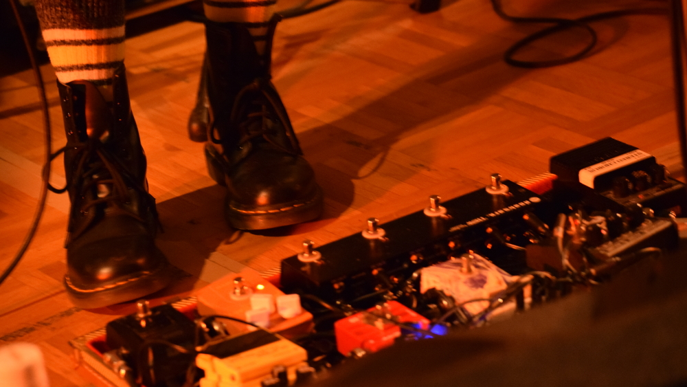
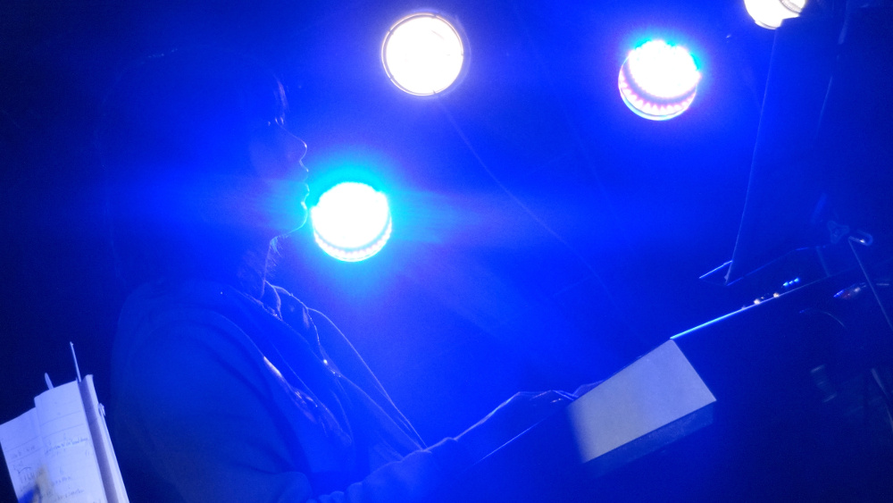
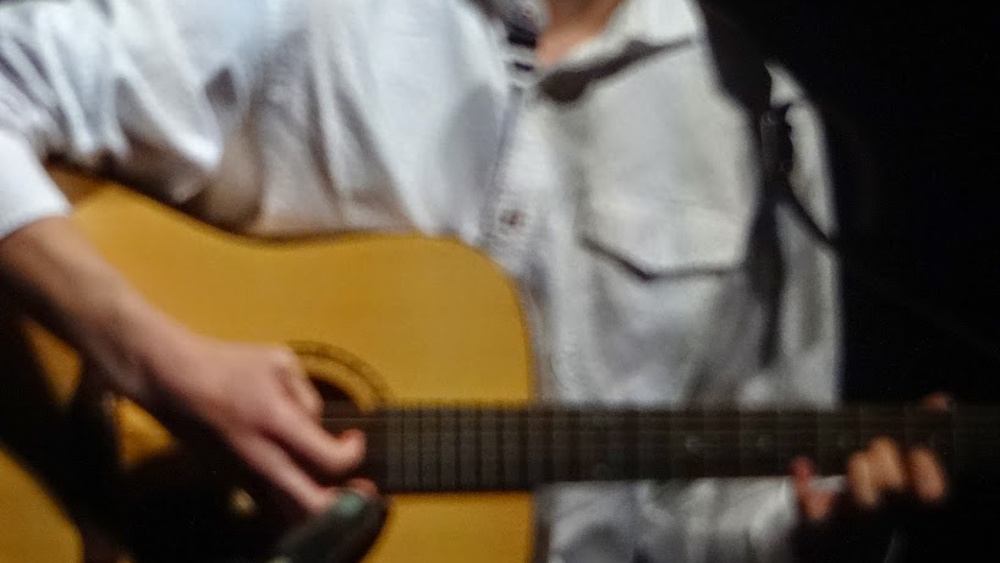
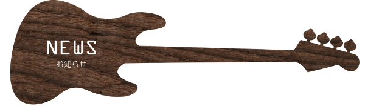

2016/9/25
10月1日,2日開催のフェスの情報を更新しました。
2016/9/25
8月26日,27日開催のサマフェスライブレポートの情報を更新しました。
2016/8/25
9月10日,11日開催の村TOJO合同ライブの情報を更新しました。
2016/8/17
8月26日,27日開催のサマフェスの情報を更新しました。
2016/7/6
7月23日開催のJuliveの情報を更新しました。
2016/4/17
4月23日開催のaiモ弾き語りライブの情報を更新しました。
2016/3/31
4月7日から開催の新歓ライブ(石の広場,ブース,ミー後ライブ)の情報を更新しました。
2016/3/23
3月29日開催の熱中唱の情報を更新しました。
2016/2/22
3月5日開催のさわこんの情報を更新しました。
2016/2/5
3月18日,19日,20日開催の39代追いコンの情報を更新しました。
2016/1/16
1月30日開催の寒フェスの情報を更新しました。
2015/11/29
12月12日,13日開催のラブライブの情報を更新しました。
2015/11/11
11月21日,22日開催の代替わりライブの情報を更新しました。
2015/10/26
11月6日からの学園祭ライブの情報を更新しました。
2015/5/1
5月5日の新歓大宴会についての情報を追記しました。
2015/4/6
ホームページをリニューアルしました。旧ホームページはリンクから参照できます。